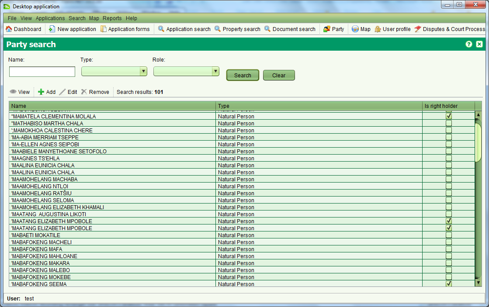

The Party Search screen allows you to locate parties which include both people
(Natural Person) and organizations/groups (Non-natural Person) that are associated
to property or property transactions. You can also add, edit, remove or view
party details from this screen. It can be accessed by selecting
 Party or Search > Party.
Party or Search > Party.

You can search by any combination of Name, Type and Role. The Name also supports
partial and full matching. SOLA makes no attempt to automatically link or
de-duplicate new party records. This can result in an individual or organization/group
being listed multiple times in the search results.
The Is right holder flag indicates whether the party has a direct association
to a property as an owner or as a named party for another property right.
Parties that are flagged as right holders cannot be edited or removed using
this screen. Instead changes to the right holder details can only be made
using the appropriate service.
Using this screen you can add a new party by clicking
 Add or edit existing parties that are not flagged as right holders by
selecting a search result and clicking
Add or edit existing parties that are not flagged as right holders by
selecting a search result and clicking
 Both actions will open the Persons Details screen allowing you to enter details
for an individual or an entity. It is also possible to add new parties as well
as edit parties using other functions in SOLA such as contact persons, property
owners and right holders.
Both actions will open the Persons Details screen allowing you to enter details
for an individual or an entity. It is also possible to add new parties as well
as edit parties using other functions in SOLA such as contact persons, property
owners and right holders.
To remove an existing party, select it and click
 Remove. If the party is not linked as an agent, property owner or right holder,
the record will be removed.
If you simply need to view the party details, select it and click
Remove. If the party is not linked as an agent, property owner or right holder,
the record will be removed.
If you simply need to view the party details, select it and click
 View.
View.
Also See